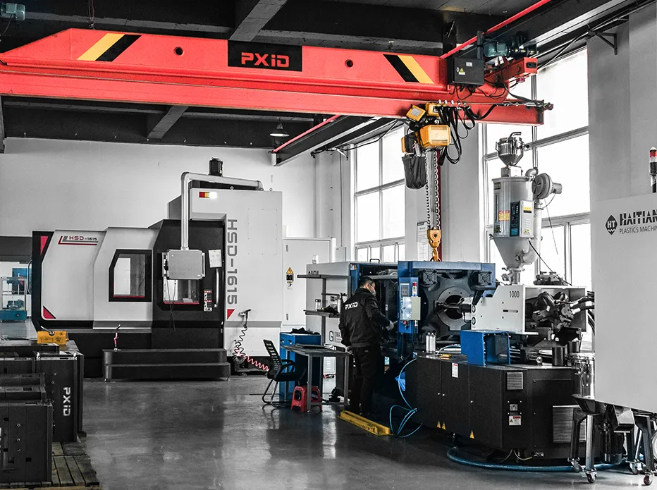
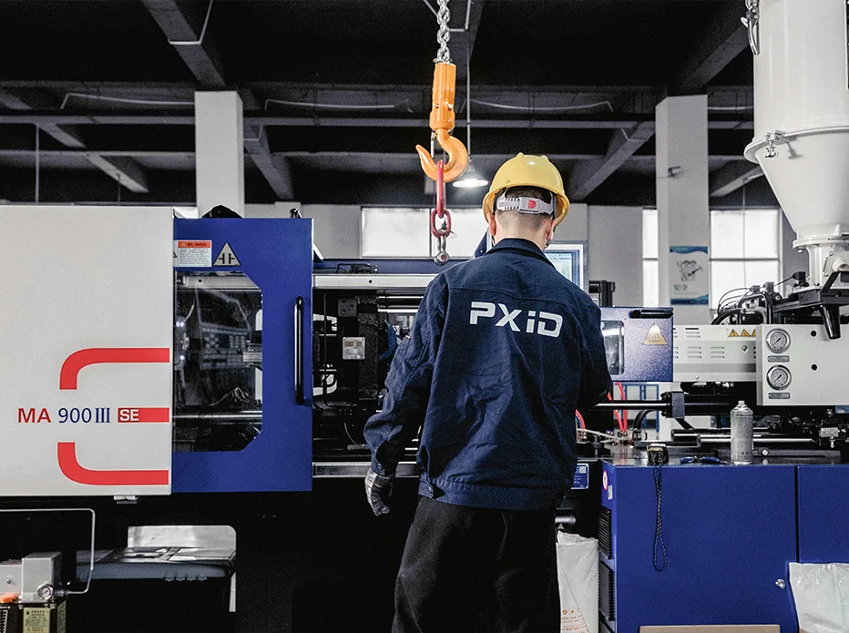
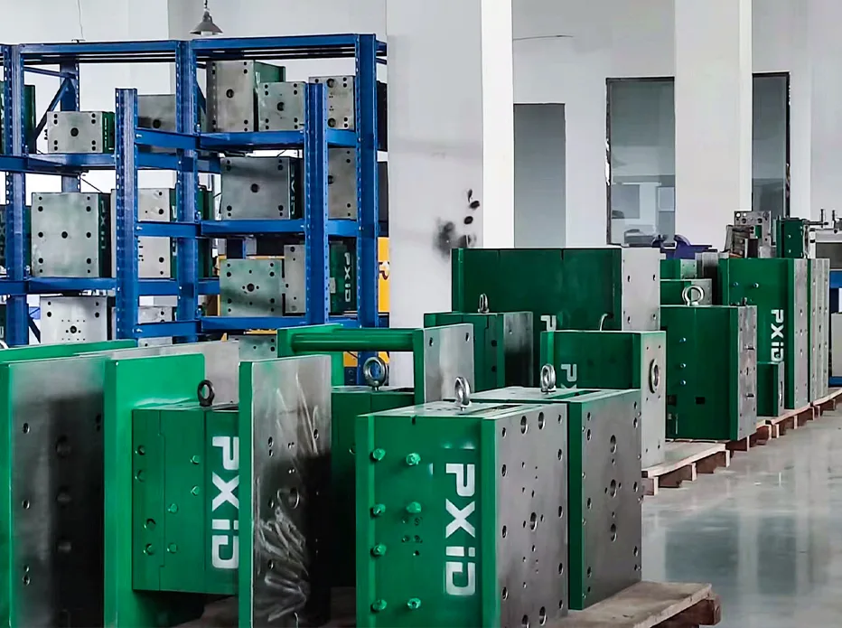
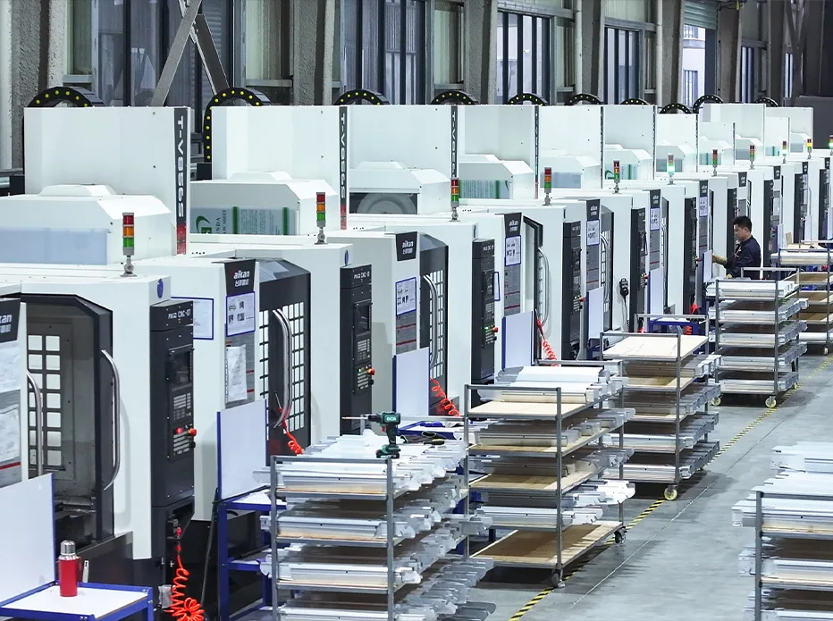
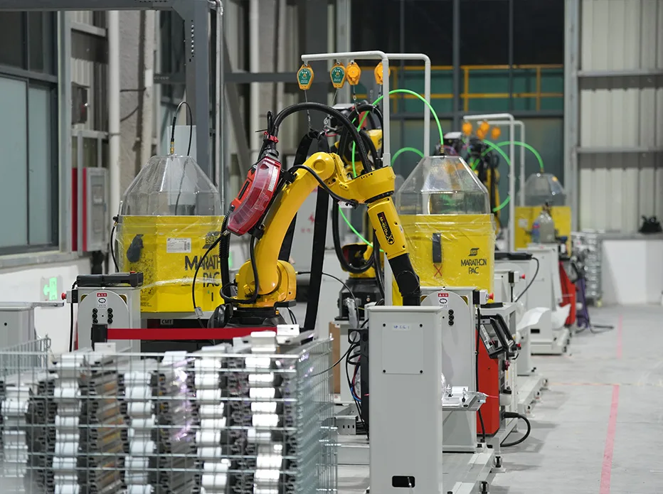
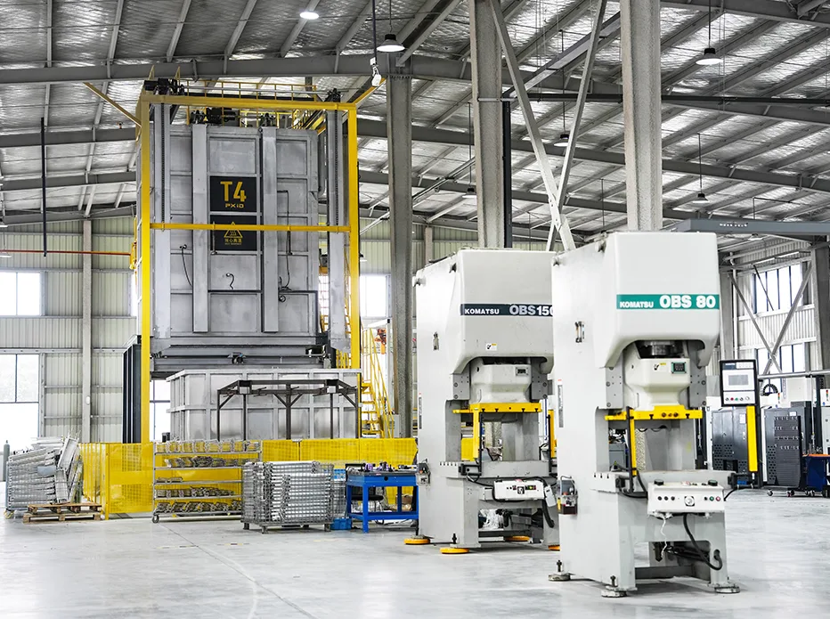
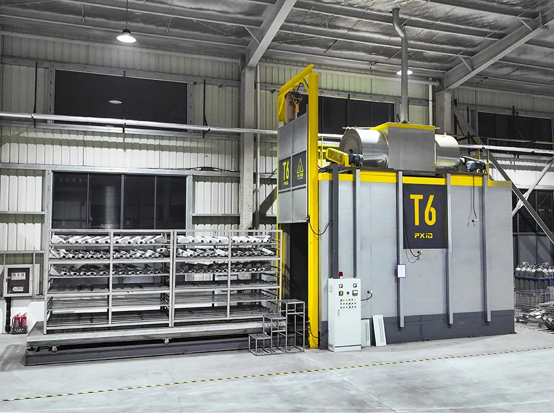
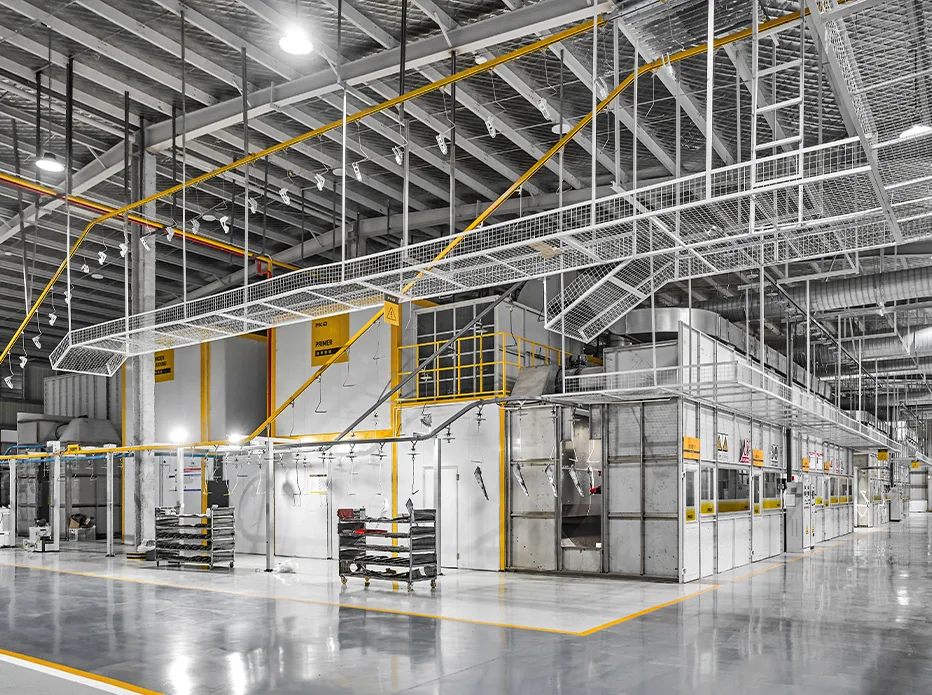
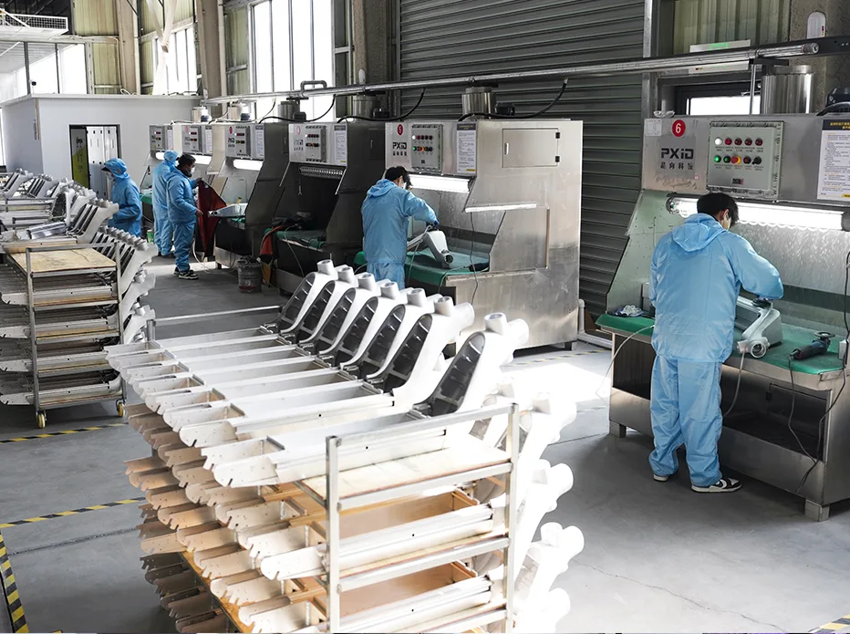

Trade ShowEUROBIKE 2026 Frankfurt: Global E-bike and Mobility Industry Trends
·5 min read
Insights & News
Stay informed with the latest trends in electric mobility — from market analysis and technology breakthroughs to manufacturing innovations and company updates.

Trade Show
Industry Trends
Product News
Manufacturing
Market Analysis
Company News
Technology
Engineering
Market AnalysisSubscribe to our newsletter for the latest industry insights, product launches, and manufacturing trends.
Tell us about your product requirements. Our team responds within 24 hours on business days.